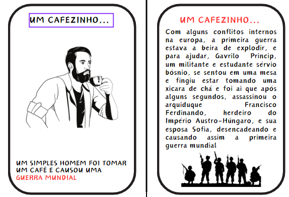
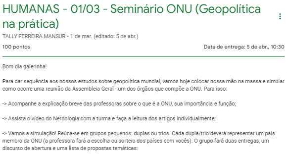

HUMANAS
ATIVIDADE 1:
BLACK STORIES

O primeiro passso para iniciar esta atividade de Black Stories, seriam formar grupos de no maximo 6 e minimo 2, e após isso cada grupo devia Criar um BLACK STORIES - (HISTÓRIAS SINISTRAS) sobre os "conflitos" geopolíticos mundiais, após as grandes navegações. O jogo precisava possuir pelo menos 20 cartas completas. Após isso a entrega deveria ser através do classsroom e pronta para impressão e corte, com o resultado do grande esforço realizado por mim e minha dupla, conseguimos alcançar o tão esperado A.
ATIVIDADE 2:
SEMINÁRIO ONU

O primeiro passso para iniciar esta atividade do Seminario da Onu, seriam formar trios ou duplas, e após isso cada grupo deveria simular como ocorre uma reunião da Assembleia Geral - um dos órgãos que compõe a ONU. Sendo assim Cada dupla/trio representaria um país membro da ONU (sorteio). Após isso, tinhamos que realizar um discurso de abertura e uma lista de propostas temáticas.Após isso a entrega deveria ser através do classsroom, e com o resultado do grande esforço realizado por mim e minha dupla, conseguimos alcançar o tão esperado A.